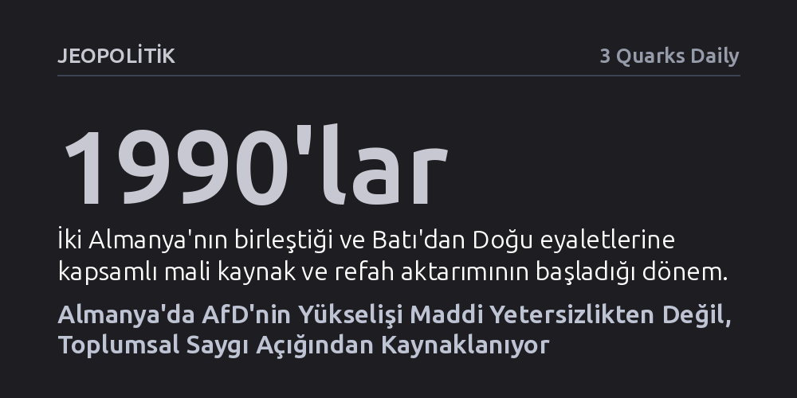

JEOPOLITIK · 3 Quarks Daily · 2026-10-08
Almanya'da aşırı sağcı AfD'nin yükselişi, Doğu'ya aktarılan maddi kaynakların yetersizliğinden ziyade eşit toplumsal saygı eksikliğinden besleniyor. Batı'dan gelen ekonomik ve hukuki kazanımlara rağmen Doğu Almanlar dışlanmış hissederken, sol partileri ele geçiren kentli eğitimli elitler bu itibar açığını derinleştirdi.
Popülist sağın yükselişini yalnızca ekonomik gelir dağılımıyla açıklayan yaygın kabulü yıkarak, meselenin kökeninde göz ardı edilme ve toplumsal itibar görmeme öfkesinin yattığını gösterir.

Almanya için Alternatif (AfD) ve ABD'deki Trump hareketi gibi sağ-popülist dalgaların güç kazanması, çoğunlukla ekonomik gelir adaletsizliği ya da refah dağılımındaki aksaklıklarla açıklanır. Oysa bu yükselişin temelinde maddi imkanların yetersizliğinden ziyade, eşit toplumsal saygının dağıtılamamış olması yatmaktadır. Kendini dışlanmış, önemsenmeyen ve toplumun kıyısına itilmiş hisseden kitlelerin biriken öfkesi, popülist siyaset için en verimli zemini hazırlamaktadır.
Bu dinamik özellikle Almanya örneğinde son derece belirgin bir biçimde gözlemlenmektedir. AfD'nin asıl siyasi kalesini ve oy deposunu eski komünist Doğu Almanya (Demokratik Almanya Cumhuriyeti) topraklarında kurmuş olması, ekonomik yardımların tek başına toplumsal huzuru sağlayamadığının açık bir göstergesidir.
1990'ların başında gerçekleşen iki Almanya'nın birleşmesinin ardından, eski Batı Almanya yönetimi Doğu'yu kendi gelişmiş ekonomik sistemine entegre etmek için kapsamlı adımlar attı. Doğu eyaletlerine muazzam boyutta servet ve sosyal refah yardımları aktarılırken, eski komünist toplumun bireylerine eşit haklar tanıyan bir hukuk devleti düzeni tesis edildi.
Ancak kağıt üzerindeki bu biçimsel eşitlik, toplumsal düzlemde gerçek bir karşılık bulamadı. Yasal olarak eşit vatandaş kabul edilmelerine karşın Doğu Almanlar, Batı'nın kültürel üstünlük taslayan tavrı ve kurumları karşısında ikinci sınıf vatandaş gibi görülmekten kurtulamadı. Kendi geçmişlerinin ve kimliklerinin değersizleştirildiği hissi, aktarılan kaynakların telafi edemeyeceği derin bir saygı açığı yarattı.
Aynı dönemde Almanya, ABD ve Birleşik Krallık gibi diğer zengin demokrasilerle birlikte köklü bir toplumsal dönüşüm sürecinden geçti. Siyaset ve karar alma mekanizmalarında yeni bir yönetici sınıf belirirken, geleneksel siyasi partilerin sosyolojik tabanı da kökten değişti.
ABD'deki Demokratlar, İngiltere'deki İşçi Partisi ve Almanya'daki Sosyal Demokratlar gibi sol hareketler, tarihsel olarak temsil ettikleri işçi sınıfından giderek uzaklaştı. Bu partilerin yönetimi ve söylemi, büyük metropollerde yaşayan, yüksek eğitimli ve kozmopolit profesyonellerin egemenliğine girdi. Şehirli elitlerin taşradaki ve eski sanayi bölgelerindeki kitleleri görmezden gelen tutumu, dışlanan seçmenlerin sistem karşıtı milliyetçi hareketlere yönelmesini hızlandırdı.